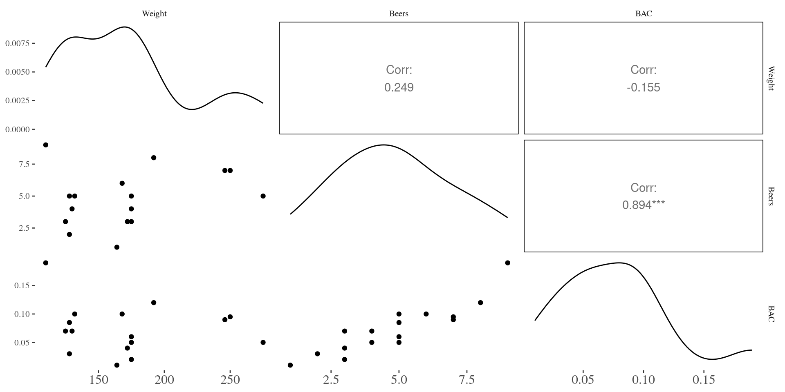
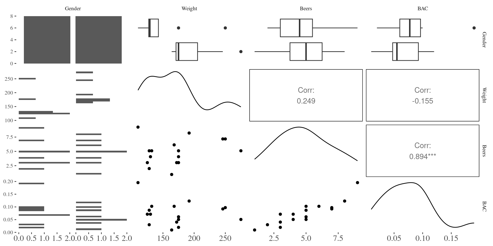

Day 40
Math 216: Statistical Thinking
Blood Alcohol Content (BAC)
1
1
female
132
5
0.100
2
2
female
128
2
0.030
3
3
female
110
9
0.190
4
4
male
192
8
0.120
5
5
male
172
3
0.040
6
6
female
250
7
0.095
7
7
female
125
3
0.070
8
8
male
175
5
0.060
9
9
female
175
3
0.020
10
10
male
275
5
0.050
11
11
female
130
4
0.070
12
12
male
168
6
0.100
13
13
female
128
5
0.085
14
14
male
246
7
0.090
15
15
male
164
1
0.010
16
16
male
175
4
0.050
Simple Linear Regression: Linear Regression of BAC (y) on Beers (x)
\[
\begin{align*}
\widehat{BAC} &=-0.0127+0.0180(\text{Beers})\\
\hat{\sigma} &= 0.02044
\end{align*}
\]
Call:
lm(formula = BAC ~ Beers, data = bac)
Residuals:
Min 1Q Median 3Q Max
-0.027118 -0.017350 0.001773 0.008623 0.041027
Coefficients:
Estimate Std. Error t value Pr(>|t|)
(Intercept) -0.012701 0.012638 -1.005 0.332
Beers 0.017964 0.002402 7.480 2.97e-06 ***
---
Signif. codes: 0 '***' 0.001 '**' 0.01 '*' 0.05 '.' 0.1 ' ' 1
Residual standard error: 0.02044 on 14 degrees of freedom
Multiple R-squared: 0.7998, Adjusted R-squared: 0.7855
F-statistic: 55.94 on 1 and 14 DF, p-value: 2.969e-06
Confidence Interval
\[
C\% \text{ confidence interval for } \beta_i \text{ is } \hat{\beta}_i \pm t^* \operatorname{SE}(\hat{\beta}_i)
\]
Get CIs for slope/intercept with confint command or compute using qt(.975, df= ) to get t* for 95% CI
confint (bac.lm) # 95% C.I.
2.5 % 97.5 %
(Intercept) -0.03980535 0.01440414
Beers 0.01281262 0.02311490
Inference for slope (effect of Beers on BAC)
\[
\begin{align*}
\mathrm{H}_0: &\ \beta_i = 0 & \text{(no effect for predictor i)} \\
\mathrm{H}_A: &\ \beta_i \neq 0 & \text{(predictor i has an effect on y)}
\end{align*}
\]
library (broom):: kable (tidy (bac.lm))
(Intercept)
-0.0127006
0.0126375
-1.004993
0.3319551
Beers
0.0179638
0.0024017
7.479592
0.0000030
Multiple Regression: Include More Predictors (Explanatory Variables)
Suppose you have \(p\) explanatory variables. The mean of Y is a linear function of \(\boldsymbol{x}_1, \boldsymbol{x}_2, \ldots, \boldsymbol{x}_p\) .
\[
E(Y \mid X) = \beta_0 + \beta_1 X_1 + \beta_2 X_2 + \cdots + \beta_p X_p
\]
Scatterplot Matrix for BAC Example
library (GGally)ggpairs (bac[, - c (1 ,2 ,3 )]) + theme (axis.text.x = element_text (size = 12 ))

Regression of BAC on Beers and Weight
The fitted model for BAC is:
<- lm (BAC ~ Beers + Weight, data = bac) # fit the model summary (lm1.bac)
Call:
lm(formula = BAC ~ Beers + Weight, data = bac)
Residuals:
Min 1Q Median 3Q Max
-0.0162968 -0.0067796 0.0003985 0.0085287 0.0155621
Coefficients:
Estimate Std. Error t value Pr(>|t|)
(Intercept) 3.986e-02 1.043e-02 3.821 0.00212 **
Beers 1.998e-02 1.263e-03 15.817 7.16e-10 ***
Weight -3.628e-04 5.668e-05 -6.401 2.34e-05 ***
---
Signif. codes: 0 '***' 0.001 '**' 0.01 '*' 0.05 '.' 0.1 ' ' 1
Residual standard error: 0.01041 on 13 degrees of freedom
Multiple R-squared: 0.9518, Adjusted R-squared: 0.9444
F-statistic: 128.3 on 2 and 13 DF, p-value: 2.756e-09
\[
\widehat{BAC} = 0.0399 + 0.0200 (\text{Beers}) - 0.00036 (\text{Weight}).
\]
Regression of BAC on Beers and Weight
:: kable (tidy (lm1.bac))
(Intercept)
0.0398634
0.0104333
3.820787
0.0021219
Beers
0.0199757
0.0012629
15.817343
0.0000000
Weight
-0.0003628
0.0000567
-6.401230
0.0000234
:: kable (confint (lm1.bac))
(Intercept)
0.0173236
0.0624031
Beers
0.0172474
0.0227040
Weight
-0.0004853
-0.0002404
Regression of BAC on Beers, Weight, and Gender
\[
\widehat{BAC} = 0.039 + 0.020 (\text{Beers}) - 0.00034 (\text{Weight}) - 0.0032 \text{ (Male)}
\]
Both number of beers and weight are statistically significant predictors of BAC (p-value < 0.0001). Holding weight constant, we are 95% confident that the true effect of drinking one more beer is a 0.017 to 0.023 unit increase in mean BAC.
Scatterplot Matrix for BAC Example
library (GGally)ggpairs (bac[, - c (1 ,2 )]) + theme (axis.text.x = element_text (size = 12 ))

Regression for BAC on Beers, Weight, and Gender
<- lm (BAC ~ Beers + Weight + Gender, data = bac) # fit the model summary (lm2.bac)
Call:
lm(formula = BAC ~ Beers + Weight + Gender, data = bac)
Residuals:
Min 1Q Median 3Q Max
-0.018125 -0.005713 0.001501 0.007896 0.014655
Coefficients:
Estimate Std. Error t value Pr(>|t|)
(Intercept) 3.871e-02 1.097e-02 3.528 0.004164 **
Beers 1.990e-02 1.309e-03 15.196 3.35e-09 ***
Weight -3.444e-04 6.842e-05 -5.034 0.000292 ***
Gendermale -3.240e-03 6.286e-03 -0.515 0.615584
---
Signif. codes: 0 '***' 0.001 '**' 0.01 '*' 0.05 '.' 0.1 ' ' 1
Residual standard error: 0.01072 on 12 degrees of freedom
Multiple R-squared: 0.9528, Adjusted R-squared: 0.941
F-statistic: 80.81 on 3 and 12 DF, p-value: 3.162e-08
Regression Details for BAC on Beers, Weight, and Gender
“Male” is an indicator variable that equals 1 when predicting male Blood Alcohol Content (BAC) and 0 for female.
Barb’s Prediction
Context : Barb drank 4 beers, weighs 160 lbs, and is female.Equation : \[
\widehat{BAC} = 0.039 + 0.020(4) - 0.00034(160) - 0.0032(0) = 0.0646
\] John’s Prediction
Context : John drank 4 beers, weighs 160 lbs, and is male.Equation : \[
\widehat{BAC} = 0.039 + 0.020(4) - 0.00034(160) - 0.0032(1) = 0.0614
\]